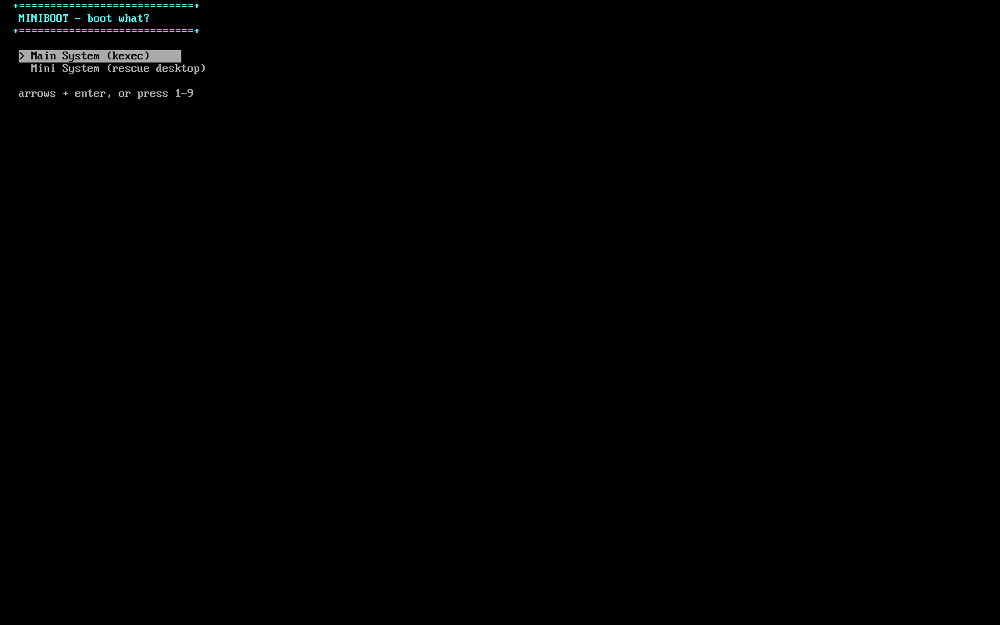
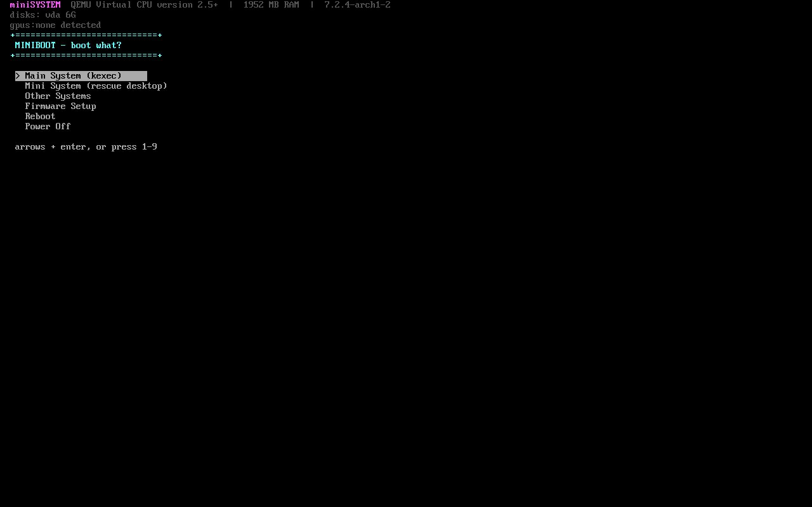
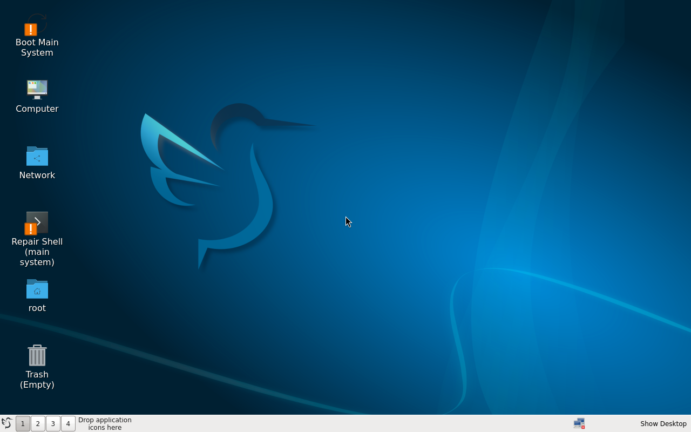

A tiny Linux bootloader with a real arrow-key TUI. Shows your hardware,
finds your systems, and kexecs straight in — or drops you into a
rescue desktop. Inspired by ZFSBootMenu, minus the ZFS requirement.
Arrow keys, highlight bar, autoboot timer. Serial and VGA safe, zero extra binaries.
CPU, RAM, disks and GPUs detected at boot, shown above the menu.
Packs microcode + initramfs and jumps — no firmware round-trip.
switch_root into a full desktop with one-click Boot Main and Repair Shell.
Scans every disk for other Linux installs and lists them.
Plain-text file on the ESP: EFI BootNext, kexec, shell, reboot.
One keystroke into UEFI Setup via OsIndications.
Adds one EFI entry. GRUB and rEFInd stay untouched behind it. Every failure lands in a rescue shell.
Every shot below is real output — QEMU serial/VGA captures and real boot photos from development, not mockups.
Arrow-key navigation, highlight bar, works over serial and VGA alike.

CPU, RAM, kernel, disks and GPUs probed live before the menu draws.

GRUB, rEFInd and UEFI OS harvested into the menu as BootNext entries.
switch_root into a full desktop: Boot Main System and Repair Shell on the desk.

Mini system found on a separate home partition — the case that bit us once.
Edit EFI/miniboot/entries.conf on the ESP from any OS. Format:
# type|label|arg1|arg2|arg3
efi|Windows Boot Manager|0001 # set BootNext, reboot
kexec|My Kernel|/boot/vmlinuz-x|quiet # kexec from MAIN root
shell|Rescue shell
reboot|Reboot now
poweroff|Power offArch Linux (or derivative), efibootmgr, kexec-tools, busybox, mkinitcpio, EFI boot, kernel with CONFIG_KEXEC=y. Secure Boot must be off (or enroll your own keys). Uninstall anytime with sudo ./uninstall.sh.